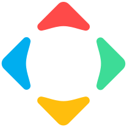
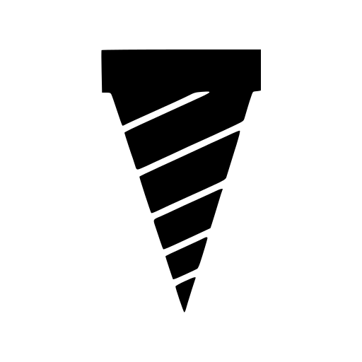

Yatima Santamorena
Build & DevOps Engineer and consultant in automation, game development, and defensive security, with a C++ background
Experience
Present
PANDAWORKS, CORP.
Owner
2026 to present
- Provide defensive security consulting, assessing client applications, source code, systems, and infrastructure to identify vulnerabilities
- Deliver vulnerability reports with actionable recommendations for remediation
- Submit proposed fixes through pull requests when repository access is available
Pandaware LLC
Owner
2024 to present
- Provide consulting and freelance services in automation, pipelines, and game development
People Can Fly / ex-Epic Games Poland
Senior Build Engineer contractor
October 2023 to present
- Provide technical leadership and end-to-end ownership of automation, Kubernetes, and DevOps across all internal projects
- Migrated all internal projects from Jenkins to Horde, making builds 2–3× faster
- Set up Kubernetes deployments for every internal service, enabling up to 10× faster service deployment and adding redundancy
- Operate Horde and Unreal BuildGraph pipelines, administer Perforce and Swarm, and automate infrastructure with Ansible, Docker, Rancher, Harvester, and Robomerge
- Automate service deployment and recovery using Codex, Claude, and custom MCP integrations
NHB Consulting SEZC
Retainer contractor
August 2023 to present
- Provide technical support for an Anguilla-based consulting company
- Support networking and security operations for MikroTik, Ubiquiti, and OPNSense devices
- Coach senior staff on practical cybersecurity habits and operational safety
Past

CrytekBuild Engineer
June 2023 to August 2023
- Maintained automated build processes for Crysis 4, Hunt, and CryEngine
- Supported distribution of builds to customers and QA
- Worked primarily in Python on build-system automation
GameMaker / YoYoGames / Opera
Build Engineer contractor
June 2021 to March 2023
- Owned all automation related to the GameMaker CI/CD pipeline, from runtime and IDE builds to packaging and releases across desktop, mobile, web, tvOS, and consoles
- Researched and implemented cloud build automation using GitHub Actions, AWS, and S3
- Developed and maintained CI/CD automation with Python, C#, PowerShell, Jenkins, and Docker
- Automated builds and packaging for platform SDKs including Android, HTML5, iOS, macOS, Linux, Windows, WebAssembly, tvOS, PS4, PS5, Switch, Xbox One, and Xbox Series XS
Zuru Tech
Junior C++ Software Developer
December 2020 to March 2021
- Worked on arch-viz BIM software built on a fork of Unreal Engine 4
- Developed in C++14 with Visual Studio and Rider
- Wrote reliability tests that helped detect flaws and improve product stability
Ubisoft
Junior Gameplay Programmer
September 2020 to December 2020
- Worked on Mario + Rabbids Sparks of Hope with teams in Milan and Paris
- Built C++17 backend automation for navmesh generation in a modified Snowdrop engine
- Worked in a production environment using Perforce and Windows tooling
Sfera Productions
Unreal Engine / VR Developer
2016 to 2018
- Developed VR virtual tours, experiences, documentaries, and games with Unreal Engine 4.x for PC and mobile headsets
- Built for Oculus DK2, HTC Vive, Samsung Gear, Cardboard, and Daydream
- Digitized a Cranio Creations tabletop board game in Unreal with VR controllers
- Showcased work at Lucca Comics & Games and contributed to a Steam release
- Focused on draw-call reduction, pixel overdraw, mesh optimization, benchmarking, and Blueprint extensions with C++ to keep interactive VR experiences comfortable and shippable on constrained hardware
ITC Consulting
Unity Developer
2015 to 2016
- Developed a Unity driving simulator with C# and external libraries
- Built a high-performance C# action-recording system backed by SQLite for replay analysis
- Connected cockpit hardware through Windows APIs, emulated RS-232, USB, and Arduino
- Maintained traffic AI for city simulation scenarios
Projects
- ProteinMate - Protein and calorie tracking app, Visit ProteinMate
-

Drill - File search that goes nyoom, built because waiting for search results is spiritually damaging, Visit Drill - GMILauncher - A practical GameMaker-related launcher/tooling project, View on GitHub
Skills
Build and release engineering
- CI/CD, build automation, packaging, release operations, developer tooling, build farm operations
- Perforce, Swarm, Horde, Jenkins, GitHub Actions, BuildGraph, Robomerge
- Python, C#, PowerShell, Bash, Groovy, Inno Setup Pascal
Platforms and infrastructure
- Windows, Linux, macOS, Android, iOS, WebAssembly, tvOS
- Docker, Kubernetes, Rancher, Harvester, Ansible, AWS, S3, Headlamp, Portainer, Homepage
- Networking with MikroTik, Ubiquiti, and OPNSense
Defensive security consulting
- Vulnerability assessments across applications, source code, systems, and infrastructure
- Vulnerability reporting, remediation recommendations, and proposed code fixes through pull requests
Game and engine development
- C, C++, C#, Unreal Engine 4, Unity, OpenGL, SDL2
- Console SDK experience: PS4, PS5, Switch, Xbox One, Xbox Series XS
- Performance work for VR and hardware-constrained interactive systems
Education
Sapienza University of Rome - Computer Science
2013 to 2016
- Studied Computer Science before moving directly into startup and 3D engine work
Awards
Rotary Club Rome - Youth Award for Science and Technology
2013
- First place in a C++ programming competition
Languages
- Italian: native
- English: used regularly in professional contexts
- Spanish: basic comprehension
Personal Life
- Started programming through game-making tools and stayed curious about engine internals, graphics, build systems, and performance
- Enjoy D&D, anime, and manga
- Interested in home automation, KNX, Raspberry Pi, Home Assistant, Ubiquiti, OPNSense, search engines, RISC hardware, and teaching